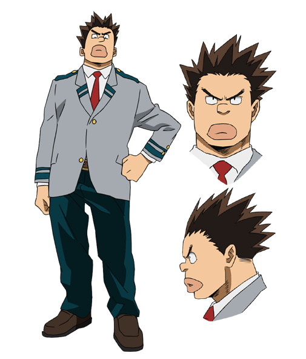

Rikido Sato
Nome de Herói: Sugarman
Individualidade: Sugar Rush – Seu poder físico se multiplica por cinco para cada 10 gramas de açúcar que ele consome, mas seu cérebro perde funções cognitivas temporariamente quando o efeito passa.
Perfil:
Tem um visual bruto, mas adora fazer doces e bolos (precisa disso para o poder) e é muito amigável, frequentemente cozinhando para animar o pessoal nos dormitórios.